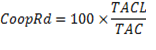

Tablero cuantitativo
| INFORMACION | CRITERIO | SUBCRITERIO | INDICADOR | FORMULA | VALORES | RESULTADO | ESTADO |
|---|---|---|---|---|---|---|---|
| ACADEMIA | CUERPO ACADEMICO | Afinidad de formacion de posgrado |
{{afps['afp']}} |
|
|||
| ACADEMIA | CUERPO ACADEMICO | Composicion de la planta academica |
{{cpas['cpa']}} |
||||
| ACADEMIA | CUERPO ACADEMICO | Actualizacion cientifica |
{{acps['acp']}} |
|
|||
| ACADEMIA | CUERPO ACADEMICO | Profesores Visitantes |
{{pvs['pv']}} |
|
|||
| ACADEMIA | CARRERA DOCENTE | Titularidad y dedicacion |
{{tids['ptc']}} |
|
|||
| ACADEMIA | EFICIENCIA ACADEMICA | Estudiantes por profesor |

|
{{eps['ep']}} |
|
||
| ACADEMIA | EFICIENCIA ACADEMICA | Tasa de permanencia |
{{tpms['tpm']}} |
|
|||
| ACADEMIA | EFICIENCIA ACADEMICA | Tasa de titulacion |
{{tts['tt']}} |
|
|||
| INVESTIGACION DESARROLLO E INNOVACION (I + D + I) | CONDICIONES | I + D colaborativo interno |
{{idis['idi']}} |
|
|||
| INVESTIGACION DESARROLLO E INNOVACION (I + D + I) | CONDICIONES | Cooperacion externa y reedes de investigacion |  |
{{cooprds['cooprd']}} |
|
||
| AMBIENTE CONSTITUCIONAL | RECURSOS DE APRENDIZAJE | Ambientes de aprendizaje |
{{iaas['iaa']}} |
|